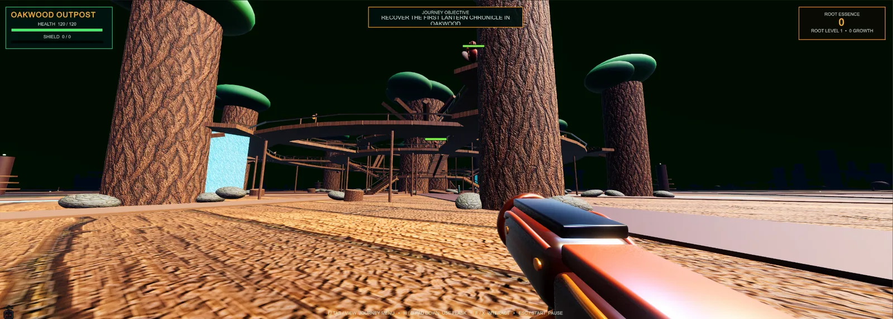
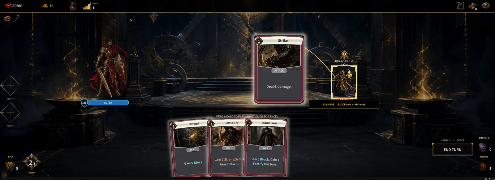

River Hine · Game & web development
From the browser
to game worlds.
I'm a student at Meridian Technical Charter High School. I started with HTML, CSS, and JavaScript and moved into Unity and C# to explore larger games and interactive systems.
Featured projects
See all six projects ↗What I’m working on

HTML / CSS / JavaScript → Unity / C#
Exploding Nuts
From a browser game to experiments with 3D gameplay in Unity. Explore the gameplay, menus, and armory screenshots.

Unity · C# · Deckbuilder
Gilded Fate
A dark-fantasy deckbuilder project. See combat, the main menu, and the card collection.
How I buildHuman-directed, AI-assisted.
I use AI for brainstorming, code generation, debugging, and iteration. I direct the design, test results, and make the final decisions as I learn.
Beyond the screen
View certifications ↗Learning through practice.
I’m also a varsity tennis player for Centennial High School. Curiosity, practice, and persistence are part of how I approach both sport and development.